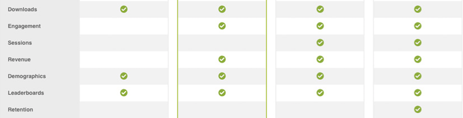
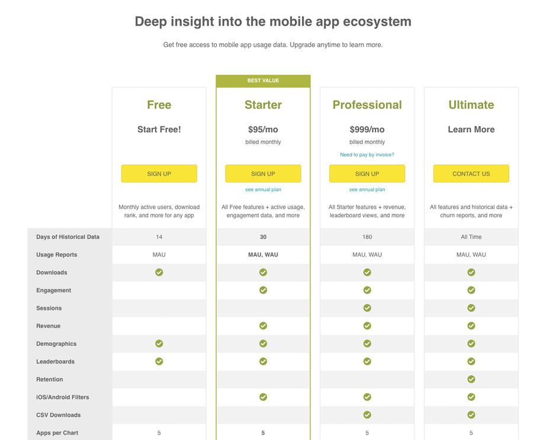
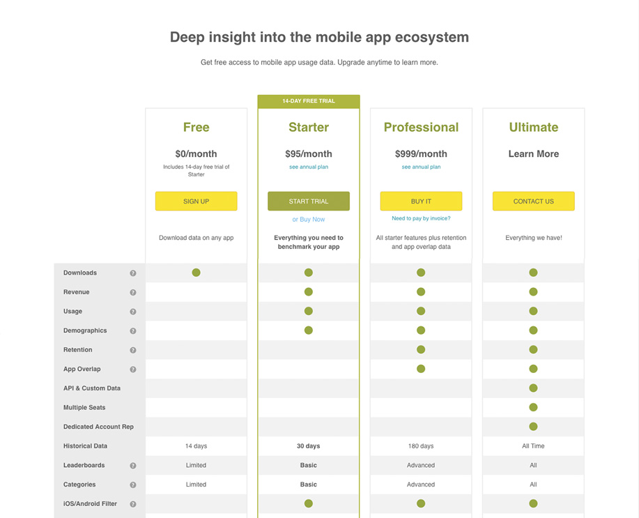

SurveyMonkey Intelligence
Product Management and Design
Product Manager for the Intelligence dashboard and mobile apps
SurveyMonkey Intelligence is a product that provides customers with engagement data on iOS and Android mobile apps (e.g. how many active users does Facebook have? what is the weekly churn of Instagram?).
I lead the development for the SurveyMonkey Intelligence web dashboard and Android mobile apps, which acquires users for our mobile panel. I also designed a number of the UX/UI flows for both products.
Press
SurveyMonkey takes on App Annie with launch of its mobile app insight platformOverview
SurveyMonkey Intelligence is a product that provides customers with engagement data on iOS and Android mobile apps. Our reports answer questions like "how many active users does Facebook have?" "what is the weekly churn of Instagram?".
The SurveyMonkey Intelligence business unit ran as an independent team with 12 people (including marketers, product, business, and engineering). Our team was essentially a start up. I had the opportunity to work across many projects at a high level (contributing to our strategy) and working hands on to help develop the product.
Designing New Reports
After launch, I spoke with sales and interviewed customers to understand and prioritize what kind of new reports to develop for the dashboard. I defined and designed many of the new reports. This includes demographic reports like gender, regional, and average user persona reports. It also included many of our leaderboards which shows apps ordered by different metrics such as churn.
Improving our free to paid conversion rate
One of my main contributions was improving the free to paid conversion rate of our paid plans. Our free to paid account conversion rate was lower than the industry average for SaaS companies. My main hypotheses on the issue was that
- Users were confused about what they were buying.
There wasn't a clear progression of reports from our Free, Starter, Professional, to our Ultimate plans on the pricing page. For example, our demographic reports which includes gender, age, income etc were not all grouped under one plan. The gender report would be in the Starter plan while the income report would be in the Ultimate plan. Why is that? How does a user understand that?
Plan and Pricing page
This was an issue across other report sections too. I proposed having groups of reports under each plan to clearly communicate what a user will get for each plan. For example, I moved the demographic reports all under the Starter plan. Our new pricing page had a clear green triangle shape that identified which reports fell under which plans.
Old Plan and Pricing Page

New Plan and Pricing Page

This work lead to a large increase in our free to conversion rate. Feel free to contact me for more details